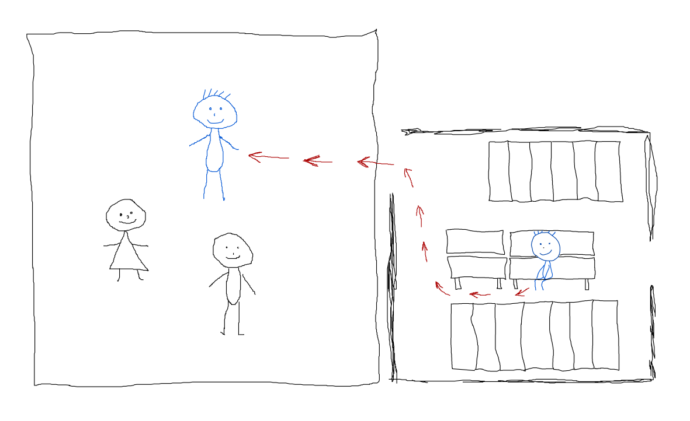
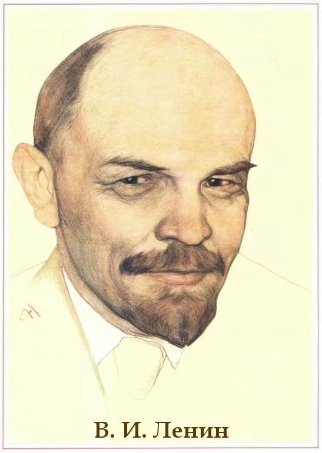

Внимание! Статья еще не дописана.
Не предавайте ребенка в себе. Когда я был маленький, я мечтал о том, что когда я выросту, я напишу книгу по детской психологии. Потому что в какой-то момент я понял, что взрослые часто не пониманиют своих детей. И многие детские "трагедии" имеют в своей основе тот простой факт, что взрослые не поняли ребенка. В детстве мне очень хотелось, чтобы меня понимали. Ведь мое поведение было логичным в рамках тех знаний и навыков, которые у меня были, и тех обстоятельств, в которые я был помещен. Но меня понимали не всегда. Вначале меня это удивляло. Потом разочаровывало - ведь взрослые не понимают ребенка потому, что сами не помнят своего детства. Потом оказалось, что детство-то они помнят, но помнят его как-то фактологически, "что было", только действия, не помня свои мысли и чувства. Или скрывают, что помнят чувства... Книгу я так и не написал, великим детским психологом не стал, но это небольшое эссе написать я просто обязан. Почему обязан? Потому что нельзя предавать ребенка в себе.
Итак, повторюсь. Некоторые люди не помнят своего детства. Для меня это странно. Я помню себя с двухлетнего возраста. Всплески сознания и радость, когда вдруг что-то резко понимал, первый опыт познания чего-то незнакомого, важные события - грустные и веселые. Я могу говорить о детской психологии и имею на это право, потому что сам был ребенком, и помню себя ребенком. И чтобы не забыть, напишу здесь несколько фрагментов из своего детства. А профессиональные психологи пусть сами думают, укладывается ли то что я здесь напишу, в их знания или нет.
Все написанное здесь справедливо для возраста от двух до пяти лет. Понимаю, что с точки зрения педагогики это очень разные возрастные категории. Поэтому в каждой главе я обязательно указываю свой возраст.
Дети очень точны
Маленький ребенок мыслит очень предметно. Предмет - это вполне конкретная вещь, либо вполне конкретное место. Ключевое слово тут - "конкретно". В двухлетнем возрасте ребенку трудно абстрагироваться, он воспринимает всё максимально буквально. То есть, если нарисовать на бумаге от руки круг и спросить ребенка "Это круг?", можно ввести ребенка в замешательство. Если он раньше видел только ровные круги, нарисованные под циркуль, или ровно вырезанные круги из бумаги, то что он должен ответить глядя на ваш немного кривой овал с дрожащим контуром? Круг это или нет?
* * *
В качестве примера точности в мышлении детей, хочу привести одну ситуацию. В двухлетнем возрасте меня первый раз повели в детский сад. Я шел туда, в принципе зная, что это такое. Детский сад - это место, куда мамы и папы приводят своих детей, они там играют и чему-то учатся. А где в это время находятся родители? Бывает, что об этом родители ДО похода в детский сад ребенку ничего не говорят. Я шел в детский сад и думал: я буду вместе с детьми, а мама где-нибудь рядом будет сидеть на скамеечке с другими мамами, и разговаривать о своих делах. Ведь не могла же мама забыть мне сказать, когда я узнавал что такое детский сад, что она оставит меня в саду, а сама уйдет?
Но именно так и произошло. Мама завела меня в переодевалку, переодела меня, и сказала что я должен остаться в группе (что такое группа? ааа...), а она сходит на работу, а потом меня заберет. То, что все оказалось не так, как я себе представлял - это пол беды... Я не хотел отпускать маму, но понимал, что это нужно сделать, ведь ей надо работать. Поэтому я согласился, что буду ждать ее здесь. И мама ушла.
Теперь, внимание, вопрос. Что значит ЗДЕСЬ? Здесь - это значит то место, где я находился именно в тот момент, когда сказал маме, что буду ждать ее здесь. Здесь - это пятачек 30x30 сантиметров на сидушке в раздевалке, на котором я пообещал маме её ждать. Я готов был сидеть на этом месте до самого вечера и ждать маму, как мы и договаривались.
Но после того, как мама ушла, пришла воспитательница, и сказала, что нужно идти в группу. Я сказал, что не могу, потому что жду маму. Воспитательница сказала, что мамы не будет долго. Ты так и собираешься здесь сидеть? Я сказал, что да, ведь я обещал что буду ждать ее здесь. Воспитательница видимо решила, что мне нужно дать время на адаптацию, и ушла в группу. Через некоторое время она вернулась, и сказала что надо идти кушать. Я ей ответил, что я не могу идти, потому что если я уйду, а в этот момент вернется мама, и не увидит меня на том самом месте, где я сидел, то я могу вообще никогда больше с ней не встретиться. Я прекрасно понимал, что невозможно контролировать и предсказывать мысли и поступки других людей, в том числе своей мамы. Существует вероятность, что она может не догадаться сделать пять шагов в комнату с группой, и побежит искать меня в другую сторону. Поэтому мне нужно сидеть здесь.
Воспитательница попыталась увести меня силой, но я, понимая ужас происходящего, и возможные последствия, решил биться до конца. Я упирался, хватался за всю мебель мертвой хваткой, выскальзывал, и видя, что силы не равны, от безысходности укусил воспитательницу, в надежде что она меня отпустит. Потом подоспела нянечка, и они потащили меня вдвоем. В группе я стал орать, потому что видел, что меня уже уволокли с того места, где я должен ждать маму, и меня там нет. И если мама именно в этот момент заглядывает в раздевалку, то... если она не увидит меня, так пусть хотя бы услышит! Я пытался объяснить словами важную для меня мысль о том, что мне жизненно необходимо находиться на сидушке в раздевалке, но именно в этот момент я понял, что значит "лишиться дара речи". Я не мог говорить, во рту все стало ватным, я слышал свой голос своими ушами, и слышал вместо членораздельных слов только бэканье и мэканье, отдаленно похожее на слова. Не имея возможности говорить, я пытался все объяснить все жестами. Я пытался быть выразительным, чтобы меня лучше поняли, и, видимо, со стороны это выглядело достаточно жутко (мычащий заплаканный ребенок что-то пытается объяснить).
Когда меня отпустили, я, несмотря на требования воспитателя, как робот встал и пошел обратно в раздевалку на свой пятачек. Больше меня не трогали, и я просидел так весь день. Я отказался от обеда, который мне принесли, потому что есть в таком заведении, куда я попал, было выше моих сил. Я думал только об одном: чтобы пришла мама, забрала меня, и мы больше здесь никогда не появлялись.
Когда мама пришла, я сидел на том же месте, где она меня оставила. Ей рассказали как я себя вел, посоветовав показать меня врачу, потому что я явно неадекватный товарищ.
* * *
Что могли бы сделать воспитатели дошкольного учреждения, чтобы сберечь и свои нервы и нервы ребенка? Во-первых, понять ситуацию, в которую ребенок попал. Это очень сложно - понять. Поэтому я и пишу этот текст, в надежде, что хоть один дошкольный педагог его прочтет, и будет знать что делать в похожей ситуации.
На месте педагогов, я, зная, что ребенок очень точен в определении "это место", предложил бы ребенку сделать записку для мамы. На листе бумаги вначале нарисовать себя, сидящем в раздевалке, потом пририсовать соседнюю комнату, стрелками показать, что пошел в соседнюю комнату к ребятам, и оставить такую "записку" на месте, где сидел. Тогда, если бы мама пришла, когда ребенка нет, она бы поняла, что он в соседней комнате, и знала бы где он находится чтобы его забрать домой. Выглядеть это могло бы вот так:

Как ребенок представляет себе пространство, которое никогда не видел
Ребенок - это маленький человек, который в буквальном смысле очень многого не видел, очень многого не знает. У него чистый мозг, не забитый вообще никакими понятиями и образами. Маленькие дети до какого-то этапа не могут даже фантазировать, не знают даже сам принцип фантазирования как мыслительного действия. (Зато, когда понимают, то мало никому не покажется). Как же ребенок представляет себе то, чего никогда не видел, в условиях когда даже фантазия еще не "включилась"?
Могу рассказать, как это было со мной. Почему-то я это запомнил.
Мне было два года, я ходил в детский сад, а мама с папой ходили на работу. Я знал, как выглядит наш многоэтажный дом, подъезд в котором мы живем, квартира. Знал, что за домом находится магазин. Знал детскую площадку во дворе перед домом. Знал путь от дома до детского сада (детский сад был вообще рядом с домом, со двора был виден забор садика). И что касается местности, больше не знал ничего.
Как я уже сказал, родители ходили на работу, а я их провожал взглядом из-за забора садика. Они шли по дорожке, заворачивали за ближайший дом, и шли в какие-то места, которые назывались "лаборатория" и "завод". Как же выглядел их путь с точки зрения ребенка?
Большие пространства я представлять себе не мог. Известное пространство для меня ограничивалось островком шириной в три многоэтажных дома. Я еще не знал, что можно представить что-то большее. Поэтому мне думалось, что когда родители скрывались из вида, они шли по длинной дорожке, обсаженной деревьями, и дорожка эта была длинной примерно с половину известного мне пространства, а дальше начиналось "молоко". И родители уходили в это "молоко". "Молоко" - это такой детский образ слова "ничего". Но оно не страшное, это не черная космическая пустота, а залитое солнечным светом "ничего". Я представлял себе, как они плутали по этому "молоку", и в конце концов приходили на работу. "Молоко" заканчивалось перед порогом завода и лаборатории. А завод и лабораторию я мог себе предствить. Они весь день были на работе, а потом сквозь "молоко" приходили за мной.
Когда стало появляться понимание, что "молока" нет, а есть городские улицы, образ "молока" никуда не делся. Я свободно мог представить вполне конкретную улицу, которую видел, и вместо неё же "молоко", и это в сознании взаимозаменялось вполне естеественным. Потом в сознание больше вошел "твердый мир", и уже мечтая о каком-нибудь месте и пути до него, я представлял себе уже это место и путь вполне осязаемыми образами.
Дети очень аккуратны
Сложно в это поверить, но все, казалось бы неуклюжие дети, на самом деле очень аккуратны. Однако аккуратны они только в том случае, если делают что-то целенаправленно; аккуратны по отношению к тому предмету, на котором фиксировано внимание. И еще дети гораздо более трепетно относятся к чувствам других людей. У взрослых это умение искореняется, начиная с какого-то возраста, а у детей оно есть.
* * *
Однажды один мальчик принес из дома в детский сад матрешку. Он поставил ее на тумбочку и отошел. Мне матрешка очень понравилась: она была очень красивая, расписная, именно такая, как про нее рассказывается в детских стихотворениях. Я стоял, и разглядывал её. И не мог поверить, что такую красивую вещь вот так просто взяли и дали маленькому ребенку, чтобы он принес её в детский сад поиграть.
Когда мальчик подошел, я его спросил: "Это твоя мартешка?". "Это папина матрешка", - ответил он, - "он мне её дал чтобы я в детском саду показал". "А там внутри есть еще матрешки?" - спросил я. "Есть", - ответил хозяин. "Можно посмотреть?" - спросил я. "Да, смотри!" - сказал хозяин.
Я аккуратно взял в руки матрешку, ощутил, как глухо перекатываются внутри неё другие матрешки. Я сразу заметил, что верхняя и нижняя часть матрешки не были состыкованы по рисунку. То есть, верхняя часть матрешки была повернута на какой-то угол относительно нижней. Это для меня было странным: никакой сложности состыковать рисунок небыло, тем более у такой красивой вещи. Я уже хотел раскрыть матрешку, но тут мне в голову пришла мысль: "Если это матрешка папы мальчика, то этот взрослый человек наверно специально, из каких-то своих соображений совместил части матрешки именно так. И он очень расстроится, если ему вернут матрешку с частями, повернутыми по-другому".
Поэтому я запомнил, как несовмещался рисунок матрешки, и только после этого раскрыл ее. Остальные матрешки тоже были собраны без совмещения рисунка. Я и для них запомнил углы несовмещения, хотя это было трудно. После того, как я поиграл с матрешкой, я стал собирать ее обратно именно так, как она была собрана изначально - с несовмещением рисунка.
Тут появилась воспитательница из другой группы. Она увидела матрешку и стала ей восхищаться. Она попросила дать ей матрешку рассмотреть поближе. Я дал, она взяла, увидела что рисунок не совмещен и упрекнула: "Что же ты такой неаккуратный? Рисунок на матрешке нужно совмещать! Вот так!" И она повернула матрешку так, что рисунок совпал. Я попытался объяснить, что так было изначально, и поэтому нужно, чтобы так и осталось. Но она, видимо, ничего не поняла из моих объяснений.
Все это я рассказываю для того, чтобы родители и воспитатели знали: у ребенка могут быть свои причины делать действия, которые кажутся нелогичными. Очень часто то, что делает ребенок выглядит неаккуратно. Но оно имеет внутреннюю структуру, обусловленную вполне конкретными причинами, не замечаемыми взрослым человеком.
Кто наш первый вождь?
Когда мне было четыре года, и я немного научился читать, мне очень понравился один из томов Детской энциклопедии. В начале этого тома рассказывалось про каменный век и про древних людей. Там был нарисован неадерталец, были фотографии каменных орудий древних людей, нарисована картина эпичной ловли мамонта. Там же было написано, что древние люди жили большими семьями - племенами, а у пелемен были вожди и была своя внутриплеменная иерархия. Я хорошо знал всю эту информацию.
* * *
Мое детство прошло в Советском Союзе. А в СССР всегда большое внимание уделялось гражданскому воспитанию. Патриотически-гражданское воспитание было даже в детских садах. И вот, на 22 апреля, в день рождения В. И. Ленина, у нас в детском саду проходил урок. Нам расказывали про Великую октябрьскую социалистическую революцию, рассказывали про Ленина, как он жил в шалаше, как сидел в тюрьме и съел чернильницу. Было интересно, рассказывали всё просто и доступно.
В конце урока воспитательница сказала: "Рабята, мы рассказали вам о том, как наша Родина стала социалистической. А теперь давайте, проверим, запомнили ли вы наш рассказ или нет. Мы будем задавать вам вопросы, а вы будете отвечать". Детям стали задавать вопросы по только что пройденной теме, ребята бойко отвечали.
Дело дошло до вопроса "Кто наш первый вождь?", и воспитательница показала на меня. Я встал, и не знал что ответить. Если бы вопрос был "Кто наш первый революционный вождь?", я бы уверенно сказал: Владимир Ильич Ленин. Но меня спросили "Кто наш первый вождь?". У меня в голове мгновенно пронеслись сотни мыслей. Я одновременно пытался понять, чего хочет услышать воспитательница: она хочет услышать про Ленина, или хочет услышать про первого вождя людей когда человек стал человеком, о котором она, несомненно знает, коль так уверенно спрашивает. Я пытался сообразить, как же люди узнали о том, кто был первый вождь, и как эта информация дошла до нас за тысячилетия. Устные предания? Наскальные рисунки? С какой целью интересуется воспитательница первым вождем? Может, она хочет услышать как звали первого вождя, и сказать, что тогда люди жили в плохо и в пещерах, а сейчас человечество прошло большой путь, и теперь при социализме мы живем хорошо? И самое главное: похоже, что я один не знаю, кто наш первый вождь. Ведь вокруг сидят ребята, и тянут руки чтобы ответить...
В любом случае, я не знал, кто наш первый вождь. И я честно сказал: "Не знаю". Глаза воспитательницы стали круглыми. Конечно, целый час вдалбливать ребенку в декларативной и в игровой форме про Ленина, а он так ничего и не понял. И вроде не самый глупый ребенок в группе. Но разбираться не стала, спросила соседа, и тот сразу сказал: "Ленин!"

Крейсер Аврора
В старших группах детского сада я начал ходить в музыкальную школу. В музыкальной школе я ходил на хор и на занятия по фортепиано. Слух у меня был, в хоре я считался "абсолютником". И вот однажды в детском саду проходил какой-то утренник, и мама договорилась, что я буду на нем петь песню "Крейсер Аврора", которую мы в тот момент тренировали в музыкальной школе. Но проблема оказалась в том, что у музыкального руководителя детского сада не нашлось времени, чтобы со мной хотя бы один раз прорепетировать песню.
* * *
В советское время в школьных садах небыло ни магнитофонов, ни каких-либо плееров. Да даже если бы и были, то где достать запись музыки без голоса? Традиционно, вся музыка просто игралась в живую на пианино самим музруководителем.
На детсадовский утренник пришла моя мама, и когда уже должно было начаться мое выступление, она сказала: "Все слова помнишь?" - "Да". - "Пой так же, как ты поешь в музыкальной школе!" - "Хорошо". И я вышел на середину зала. Музруководитель заиграла на пианино, и тут я с ужасом понял, что играет она в другой тональности. В хоре мы пели на несколько тонов выше. Что мне делать? Сложная ситуация! Мне ничего не стоило на ходу спеть в другой тональности под музыку, но мама-то сказала, что петь надо как в музыкальной школе! И я стал петь так же как в школе.
Боже, как же это было трудно! Когда человек слышит музыку, то подпевает автоматически именно в той тональности, которая звучит, даже не имея музыкального образования и понятия о нотах. Мне же пришлось слушать музыку в одной тональности, а петь в другой. Это было кошмаром. Мне пришлось волевым усилием заставить себя слушать ритм, и в то же время отключить восприятие высоты тона звучащих нот. Я все время сдерживал себя, чтобы не съехать в звучащую тональность, ориентируясь на собственный голос а не на музыку, в то же время следя за музыкой, чтобы не "убежать вперед" или не "съехать назад". С большим трудом я закончил свое выступление, радуясь, что мое мучение наконец-то закончилось.
В конце утренника к маме подошла музруководитель и сказала: как ваш сын вообще учится в музыкальной школе? Он не слышит что я играю. У него совершенно отсутсвует слух! Она не знала, сколько усилий мне пришлось приложить, чтобы спеть именно так, как я спел.
Антошка